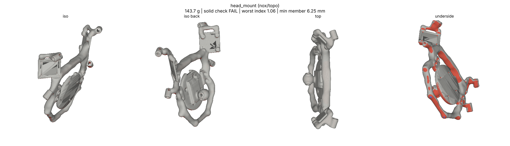
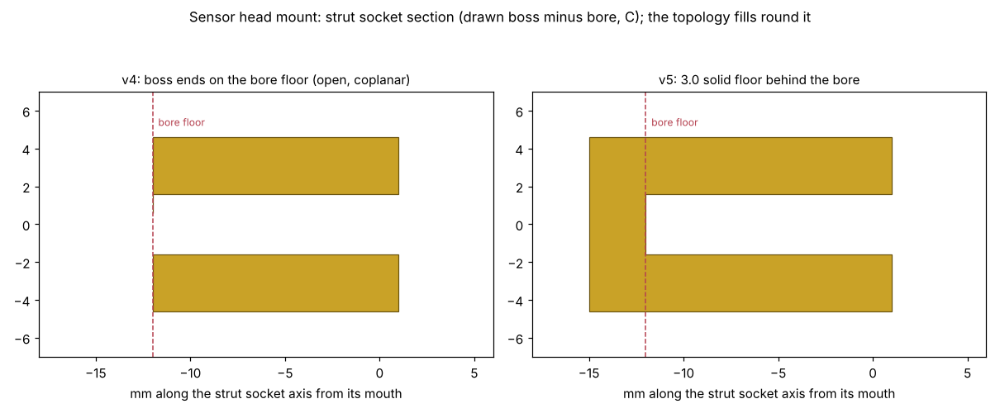

<title>Head Mount Socket Floor</title>
<style>
:root{--bg:#f6f7f8;--fg:#1d2329;--muted:#5d6872;--line:#d6dbe0}
@media (prefers-color-scheme:dark){:root:not([data-theme="light"]){--bg:#14181c;--fg:#e4e8ec;--muted:#9aa5ae;--line:#2c343b;color-scheme:dark}}
:root[data-theme="dark"]{--bg:#14181c;--fg:#e4e8ec;--muted:#9aa5ae;--line:#2c343b;color-scheme:dark}
body{background:var(--bg);color:var(--fg);font-family:system-ui,sans-serif;line-height:1.5;padding:24px 16px 48px}
main{max-width:1100px;margin:0 auto;display:grid;gap:16px}
h1{font-size:1.6rem;margin:0} p{margin:0;max-width:70ch;color:var(--muted)}
figure{margin:0;background:#fff;border:1px solid var(--line);border-radius:6px;overflow-x:auto}
img{display:block;width:100%;min-width:760px}
figcaption{font-size:.85rem;color:var(--muted);padding:8px 12px;background:var(--bg)}
</style>
<main>
<h1>Sensor head mount v4: one fix before v5</h1>
<p>The v4 topology run finished at 143.7 g. It failed the solid check on 8 single-voxel specks at the strut socket floors, so it was not saved. Each drawn socket boss ended exactly on its bore floor, leaving the socket open at the back with coplanar faces. Every socket now gets a 3 mm solid floor, the same fix as the cage nodes. The v4 mesh with the new floors added passes the solid check. The v5 run makes it for real.</p>
<figure><figcaption>v4 as run: L2 seat on its guard ring, both camera plates, keels, braces and strut sockets (red underside: overhang).</figcaption></figure>
<figure><figcaption>Strut socket section: v4 (left) open at the bore floor, v5 (right) with a 3 mm floor.</figcaption></figure>
</main>
